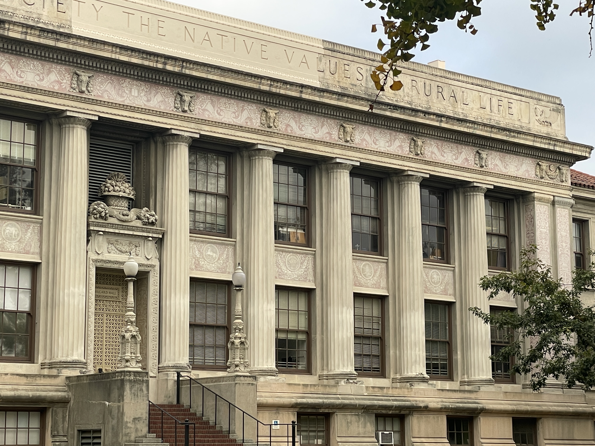
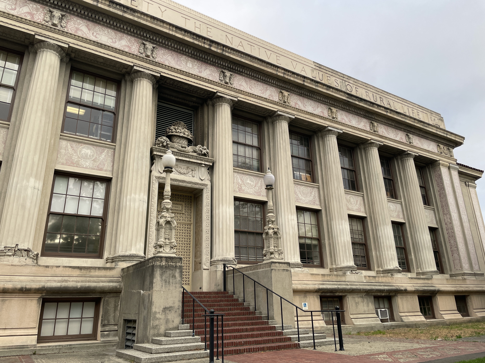
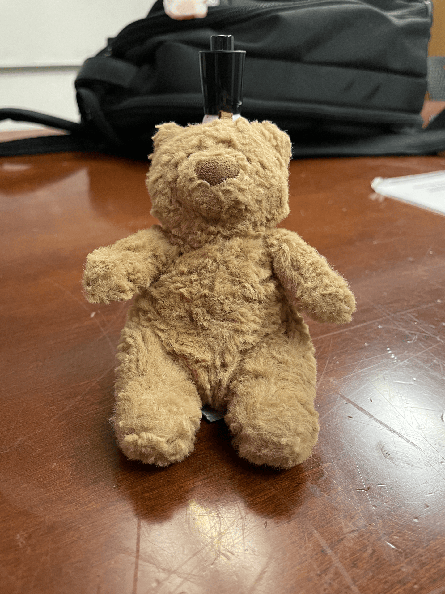

Taking a look at the close-up selfie, the face shape is more oval-like with closer facial features being highlighted and farther features, such as the ears, are almost hiddened away. In contrast, the zoomed-in selfie has more accurate proportions that would be seen in person with all of the face visible. This difference is likely due to the relative distance between the different facial features being greater in the close photo, resulting in the weird proportions.


When comparing these two photos, one distinction between them that matches the selfies is that the closer photo demonstrates a greater sense of perspective compared to the farther one. Additionally, the far photo appears to be more compressed than the close one, most noticeable when looking at the engravings surrounding the windows. As the second photo is closer, all the differences become more easily seen, resulting in the less compressed look.

In the GIF above, a dolly zoom is performed on the stuffed animal. Here, the impacts of zooming become more explicitly seen, as its effects can be seen more gradually. The background of the subject appears to become closer and closer despite the size of the subject not greatly changing.